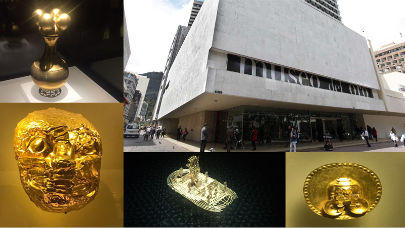
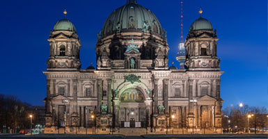
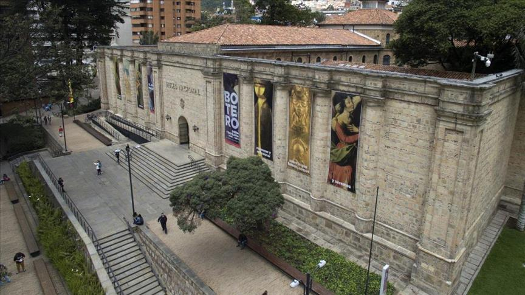

Bogota
Europe is a continent located entirely in the Northern Hemisphere and mostly in the Eastern Hemisphere. It is bordered by the Arctic Ocean to the north, the Atlantic Ocean to the west, Asia to the east, and the Mediterranean Sea to the south. It comprises the westernmost part of Eurasia.

Dominique: Para mi este continente es el mas especial. Es el lugar de mis ancestros y mucha de mi familia tambien vive ahi. No solo eso, si no tambien es donde vive el amor de mi vida. Definitivamente los paises que une debe visitar son Belgica y Holanda y si uno quiere visitar un lugar aun mas especial podria visitar Bielorrusia o Ucrania. Estos dos ultimos paises son frequentemene olvidados por eso presentan una gran opportunidad para conecer algo unico y vivir experiencias inolvidables.
La Iglesia de Todos los Santos Es una igleasia Ortodoxa dedicada a todos los santos patrones de los practicantes Ortodoxos.

En la Plaza Central de Minsk encontraras una grandiosa estatua dedicada a Vladimir Lenin al igual que muchos edificios con la famosa y llamativa arquitectura sovientica que caracteriza tanto a las ciudades de la ex-union sovietica. Tambien encontraras el edificio de los ministos de Bielorrusia y tambien esta la Iglesia Roja, una iglesia Catolica.
La Biblioteca Nacional de Minak es una impresionante obra arquitectonica que mustra que Bielorusia tiene una mirada hacia el futuro. De noche se convierte en un espectaculo con las luces que mustran todo tipo de diseños impresionantes
La Iglesia Roja o tambien conocida como la iglesia de San Pedro y San Pablo es una de las pocas iglesisas catolicas en Bielorrusia por lo que es un pais Ortodoxo. Esta iglesia esta muy adornada por adentro y todavia de da misa todos los dias para los Catolicos de la zona.
El Metro de Minak es una obra de arte en si. Todas las estaciones estan decoradas impresionantemente. Las estaciones mas antiguas estan decoradas con los simbolos del comunismo como esta, la estacion Площадь Ленина "Plaza Lenin" y las mas modernas (como Малиновка "Malinovka") donde las columnas se parecen a unos arboles en el bosque.
